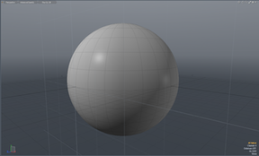
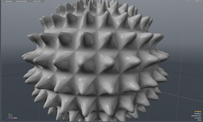

Tool spikey¶
Tool_spikey is a basic example plugin. This wiki page is intended as a walkthrough of the code in order to help you better understand the SDK.
This plugin adds the spikey tool to the suite of tools modo has. The tool takes surfaces and makes them more “spikey”, as illustrated in screenshots below
 __TOC__
Code Walkthrough¶
Class Declarations¶
We want this class to display structured data in the log. In this case it’s used to show feedback on the current spikey factor, and as such will be called whenever the spikey tool is activate. To that end, we inherit from Log_(lx-log.hpp)#ILxLogInfoBlock as we are going to want our data to be in the form of a log info block. The first method here indicates the name of the command, which in this case is test.spikey. The next three walk the list of fields, setting the count as 1(there can only be one tool), the name of the data as ‘factor’, and the data type as percent. These are all put into arrays that we can later access.
#include <lx_log.hpp>
class CSpikeyLogBlock :
public CLxImpl_LogInfoBlock
{
public:
LxResult
lb_Name (
const char **name) LXx_OVERRIDE
{
name[0] = "test.spikey";
return LXe_OK;
}
LxResult
lb_FieldCount (
unsigned int *count) LXx_OVERRIDE
{
count[0] = 1;
return LXe_OK;
}
LxResult
lb_FieldName (
unsigned int index,
const char **name) LXx_OVERRIDE
{
name[0] = "factor";
return LXe_OK;
}
LxResult
lb_FieldType (
unsigned int index,
const char **type) LXx_OVERRIDE
{
type[0] = LXsTYPE_PERCENT;
return LXe_OK;
}
};
The Spikey tool. In order to have our class create a tool, we inherit from Tool_(lx-tool.hpp)#Tool. The attributes interface is inherited from the utility class; we inherit from it in order to be able to display the attributes of our tool. First off, the tmod_Initialize function is called whenever the tool is activated/deactivated. Next, the tmod_Flags function sets flags that indicate certain attributes about the tool. Because we have chosen to use hauling for this tool, we have a tmod_Haul method that indicates which attribute we want to haul. Next, we start implementing our basic tool methods. The tool_Reset function resets all of our tool’s attributes to their original values. tool_VectorType returns the tool vector type, describing the vector packets required for processing. tool_Order specifies the order in the pipe by returning an Ordinal string. tool_Task describes the type of task performed by the tool. tool_Evaluate takes all these methods and uses them to actually perform the tool’s action(s).
#include <lx_tool.hpp>
#include <lx_vmodel.hpp>
#include <lxu_attributes.hpp>
#include <lx_layer.hpp>
#include <lx_vector.hpp>
class CSpikeyTool :
public CLxImpl_Tool,
public CLxImpl_ToolModel,
public CLxDynamicAttributes
{
public:
CSpikeyTool ();
void tool_Reset () LXx_OVERRIDE;
LXtObjectID tool_VectorType () LXx_OVERRIDE;
const char * tool_Order () LXx_OVERRIDE;
LXtID4 tool_Task () LXx_OVERRIDE;
void tool_Evaluate (ILxUnknownID vts) LXx_OVERRIDE;
unsigned tmod_Flags () LXx_OVERRIDE;
void tmod_Initialize (ILxUnknownID vts, ILxUnknownID adjust, unsigned flags) LXx_OVERRIDE;
const char * tmod_Haul (unsigned index) LXx_OVERRIDE;
CLxUser_LogService s_log;
CLxUser_LayerService s_layer;
CLxUser_VectorType v_type;
unsigned offset_falloff, offset_view;
unsigned mode_select;
};
This class is a map visitor that collects the maps in vectors based on type. In order to create a map visitor, we are going to need to inherit from Visitor_(lx-visitor.hpp), which allows us to build our custom visitor.
class CSpikeMapListVisitor : public CLxImpl_AbstractVisitor
{
...
};
This class does evaluation. It does so with a polygon visitor which holds the current state of the action. The main function here is the Evaluate function, which in this class is written to replace the polygon with a fan of triangles. All of the rest of the functions perform utilities that assist the Evaluate function in performing its function.
class CSpikePolygonVisitor : public CLxImpl_AbstractVisitor
{
public:
LxResult Evaluate ();
bool Normalize (LXtVector);
void VertexPos (unsigned index, LXtFVector pos);
bool VertexCross (unsigned i0, unsigned i1, unsigned i2, LXtVector dir);
bool GoodNormal (LXtVector dir);
bool GetSpike (LXtVector pos);
LXtMeshMapID map_id;
LXtID4 map_type;
unsigned vrt_count;
double pol_weight;
CSpikeMapListVisitor e_maps;
CLxUser_Mesh e_mesh;
CLxUser_Polygon e_poly, e_dest;
CLxUser_Point e_vert;
CLxUser_FalloffPacket e_falloff;
double e_factor;
bool edit_any;
};
./Initialize_(index)¶
This initialize method exports two servers. The first is dependent on the CSpikeyTool class and includes the interface for all the classes that CSpikeyTool inherited from. The same is done for the second server, with the exception that the class in question here is CSpikeyLogBlock. We want the server dependent on the CSpikeyLogBlock class to be activated at the same time as the one that activates the Spikey tool because it writes information about the Spikey tool to the log so we give them the same name.
void
initialize ()
{
CLxGenericPolymorph *srv;
srv = new CLxPolymorph<CSpikeyTool>;
srv->AddInterface (new CLxIfc_Tool <CSpikeyTool>);
srv->AddInterface (new CLxIfc_ToolModel <CSpikeyTool>);
srv->AddInterface (new CLxIfc_Attributes<CSpikeyTool>);
thisModule.AddServer ("test.spikey", srv);
srv = new CLxPolymorph<CSpikeyLogBlock>;
srv->AddInterface (new CLxIfc_LogInfoBlock<CSpikeyLogBlock>);
thisModule.AddServer ("test.spikey", srv);
}
Implementations¶
The CSpikeyTool constructor adds one tool attribute. This causes the plugin to query us for a value for this attribute whenever it is constructed, which happens on activation. To us, this appears as the Spike Strength value. It also allocates a vector type (which doesn’t seem to need anything in it!), the falloff packet offset and the select mode mask.
CSpikeyTool::CSpikeyTool ()
{
CLxUser_PacketService sPkt;
CLxUser_MeshService sMesh;
dyna_Add (ATTRs_FACTOR, LXsTYPE_PERCENT);
sPkt.NewVectorType (LXsCATEGORY_TOOL, v_type);
sPkt.AddPacket (v_type, LXsP_TOOL_FALLOFF, LXfVT_GET);
sPkt.AddPacket (v_type, LXsP_TOOL_VIEW_EVENT, LXfVT_GET);
offset_falloff = sPkt.GetOffset (LXsCATEGORY_TOOL, LXsP_TOOL_FALLOFF);
offset_view = sPkt.GetOffset (LXsCATEGORY_TOOL, LXsP_TOOL_VIEW_EVENT);
mode_select = sMesh.SetMode ("select");
}
Reset sets the attributes back to defaults, in this case 0.
void
CSpikeyTool::tool_Reset ()
{
...
}
Boilerplate methods that identify this as an action (state altering) tool.
LXtObjectID
CSpikeyTool::tool_VectorType ()
{
...
}
const char *
CSpikeyTool::tool_Order ()
{
...
}
LXtID4
CSpikeyTool::tool_Task ()
{
...
}
We employ the simplest possible tool model – default hauling. We indicate that we want to haul one attribute, we name the attribute, and we implement Initialize() which is what to do when the tool activates or re-activates. In this case set the factor back to zero.
unsigned
CSpikeyTool::tmod_Flags ()
{
...
}
void
CSpikeyTool::tmod_Initialize (
ILxUnknownID vts,
ILxUnknownID adjust,
unsigned int flags)
{
...
}
const char *
CSpikeyTool::tmod_Haul (
unsigned index)
{
...
}
Get a vertex position. This gets the position of the given vertex of the polygon relative to the current map. This allows us to evaluate the shape of polygons in morphs.
void
CSpikePolygonVisitor::VertexPos (
unsigned index,
LXtFVector pos)
{
...
}
Normalize a vector, if possible.
bool
CSpikePolygonVisitor::Normalize (
LXtVector v)
{
...
}
Get the normalized cross-product of edge vectors defined by the three points of the polygon.
bool
CSpikePolygonVisitor::VertexCross (
unsigned i0,
unsigned i1,
unsigned i2,
LXtVector dir)
{
...
}
Compute a good normal (one that’s symmetry safe, which the basic polygon normal is not). This takes the cross product of the 0’th point, then adds in the rest flipping as needed. Final result is renormalized.
bool
CSpikePolygonVisitor::GoodNormal (
LXtVector dir)
{
...
}
Compute the position of the spike for the current polygon in the current morph map. We compute the average position and the perimeter and normal of the polygon, and compute a position along the normal with an offset given by average edge length modulated by weight. Returns false if it cannot be computed.
bool
CSpikePolygonVisitor::GetSpike (
LXtVector pos)
{
...
}
Evaluation replaces the polygon with a fan of triangles. The central point is given a spike position in all morphs, and other maps are interpolated.
LxResult
CSpikePolygonVisitor::Evaluate ()
{
...
}
Tool evaluation uses layer scan interface to walk through all the active meshes and visit all the selected polygons.
void
CSpikeyTool::tool_Evaluate (
ILxUnknownID vts)
{
...
}